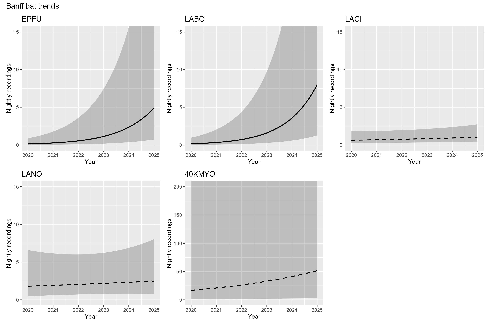

Land Acknowledgement
Biodiversity Pathways respectfully acknowledges that our work takes place on Treaty 8 and Douglas Treaties Territories as well as the traditional and unceded territories of First Nations and Métis Peoples across all regions of British Columbia, whose histories, languages, and cultures are deeply connected to the biodiversity we monitor. We acknowledge the traditional teachings of the lands that we work on, and that reciprocal, meaningful, and respectful relationships with Indigenous peoples make our work possible. We are deeply grateful for their stewardship of these lands, and we are committed to supporting Indigenous-led monitoring programs, while learning Indigenous ways of knowing, being, and doing.
Background
Methods
Banff National Park has monitored one NABat grid cell using three sites and has collected acoustic data from 2020 to 2025. Recordings were processed using an automated classifier (Kaleidoscope’s Bats of North America 5.4.0 classifier) to assign species identifications and exclude non-bat recordings. Manual identifications were used only when automated classifications were recorded as noise or were unavailable.
Data processing
Species presence and nightly activity were calculated from a site-night-species table constructed for all sampled nights. Sampling effort was defined as each unique site-night with acoustic recordings. Species codes were standardized across data sources prior to analysis. Weather covariates were summarized for each sampling night and included mean temperature, mean relative humidity, total precipitation, and mean wind speed. MMoon covariates were calculated for each site-night and included moon illumination, and an indicator of moon position. Mean nightly passes included all recordings with species or couplet labels, with couplets split and counted for both species. For trend analyses, MYLU, MYSE, and MYVO were pooled into a single Myotis group (40KMYO).
Statistical analysis
Statistical trend analyses were conducted for EPFU, LABO, LACI, LANO, and 40KMYO. Models were fit to nightly detection counts using negative binomial generalized linear mixed models (GLMMs) with a log link. Sites were included as a random intercept. Candidate model structures included year, Julian date, quadratic Julian date, and species-specific covariates. Trend analyses are presented only for species confirmed to be present at the sites through manual verification and for which models fully converged.
Results
Across the 2020–2025 monitoring period, a total of 35,103 bat detections were recorded across the three sites in the Banff NABat grid cell. The Myotis group (40KMYO) had the highest number of detections (29,209; mean = 111.00). This was followed by Hoary Bat (2,009; mean = 7.61), Silver-haired Bat (1,773; mean = 6.72), Big Brown Bat (1,355; mean = 5.13), and Eastern Red Bat (757; mean = 2.87).
Interactive map
Species detected and mean nightly activity
Detected species and nightly bat activity varied among years and sites (Table 1). In total, up to eight species were detected, with Big Brown Bat (EPFU), Silver-haired Bat (LANO), Hoary Bat (LACI), and Eastern Red Bat (LABO) detected across most years and sites. Myotis species showed more variable detections: Little Brown Myotis (MYLU) was detected frequently, while Long-legged Myotis (MYEV), Western Long-eared Myotis (MYVO), and Long-eared Myotis (MYSE) were detected less consistently.
Nightly bat activity varied across quadrants and years. Activity was highest in NE and NW in 2022–2023, while SW remained consistently low. NW showed a pronounced peak in 2024, the highest across all years, whereas activity in 2025 was more uniform among quadrants. Overall, while several species were consistently detected across the study period, both species presence and nightly activity showed strong spatial and temporal variability. Differences in sampling effort among quadrants and years likely contributed to some level to this pattern.
Species Trends
Models converged for five species/groups: Big Brown Bat (EPFU), Eastern Red Bat (LABO), Hoary Bat (LACI), Silver-haired Bat (LANO), and the combined Myotis group (@fig-trends). Significant increases in nightly activity were detected for Big Brown Bat (β = 0.74, SE = 0.09, z = 8.11, p < 0.001) and Eastern Red Bat (β = 0.81, SE = 0.10, z = 7.88, p < 0.001). In contrast, no significant temporal trend was detected for Hoary Bat (β = 0.10, SE = 0.09, z = 1.10, p = 0.270), Silver-haired Bat (β = 0.06, SE = 0.13, z = 0.48, p = 0.633), or the combined Myotis group (β = 0.22, SE = 0.12, z = 1.81, p = 0.071).

Discussion
Data used for trends only uses autoID from Kaleidoscope, which has been shown to confuse Myotis spp. for LABO.
Results must be taken with caution because of small sample size, but overall can conclude that bat species at the grid cell are stable.
Acknowledgements
Literature Cited
Banff National Park - NABat Trend Results 2020-2025 - Banff National Park Activity Trends Banff National Park - NABat Trend Results 2020-2025 - Banff National Park Activity Trends Banff National Park - NABat Trend Results 2020-2025 - Banff National Park Activity Trends Banff National Park - NABat Trend Results 2020-2025 Activity Trends 2020-25 Activity Trends 2020-25